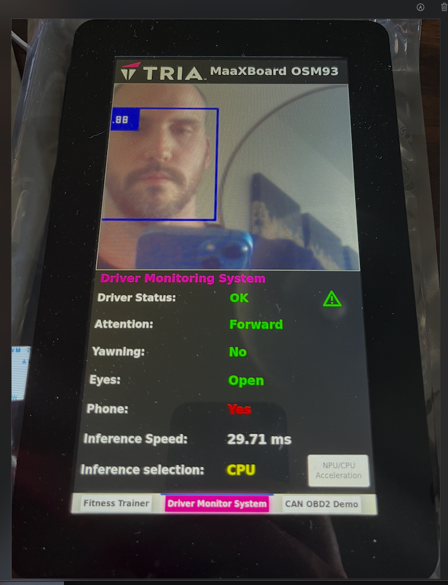

MaaxBoard OSM93 AI Driver Monitoring & Vehicle ECU Simulator
Table of Contents

Overview
This project involved building a complete demonstration platform for an AI Driver Monitoring System (DMS), vehicule ECU simulator, and demo application suite using the MaaxBoard OSM93 single board computer.
The demo system showcased CAN bus communication, real-time data acquisition, and an interactive GUI developed using Python and Glade.
It integrated NXP driver monitoring libraries, open-source pose detection and facial detection models, and served as an evaluation tool for customer and partner demos.
Objective
To design a highly modular, scalable, and visually compelling demonstration suite for:
- Showcasing Edge AI capabilities
- Demonstrating use of various interfaces: MIPI Display, CAN interface, USB Camera
- Interactive UI to allow customers and FAE to exercise multiple demos on a single platform
Design
Hardware Layer:
- MaaxBoard OSM93 SBC with OSM93 integrated SOM
- CAN transceiver hardware
- Powerbank to provide power to the OBDII module & MaaXBoard OSM93

Software Layer:
- Python-based GUI using GTK + Glade
- Python-can for sending / receiving data over the CAN interface
- Modular driver monitoring data simulation
- Real-time data plotting + session logging
- TfLite for integrating open-source ML models (post detection, facial detection, etc)
- Microdot (Flask) - for creating a local web server providing facts, data around the MaaXBoard OSM93 and a live video stream
- ELM327 python library to help generate dummy values for ECU simulator

The demo suite provided engineers and partners with a ready-to-use interactive platform to visualize, control, and experiment with driver monitoring scenarios over CAN bus.
My Role
- Architecting the hardware + software stack
- Design and implement a software engine to simulate CAN output data
- Building the full Python-Glade GUI application
- Creating documentation and packaging the system for deployement
- Supporting FAE and sales demonstrations
Technologies / Libraries
- Embedded Linux (Yocto)
- CAN Bus (SocketCAN, ELM327 emulator)
- Python + Glade (PyGObject / GTK)
- Wireless OBDII scanner interfaced to CAN connector on board
Results
- Demo suite showing three separate software applications: AI Driver Monitoring System, AI Fitness Trainer, and a simulated vehicle ECU engine.

- Above is an AI driver monitoring system that relies on open-source pose and facial detection models to monitor driver attention using head, face, and eye detection.

In the GIF above, the MaaXBoard OSM93 is acting as a vehicle ECU.
- When the board boots, a call-back routine is established to monitor incoming CAN bus messages.
- Using an open-source iphone or Android application (such as CarScanner), a user can connect their phone to the OBDII wireless dongle.
- When the phone application successfully connects to the OBDII dongle, a series of CAN messages are sent to the MaaXBoard OSM93 via CAN bus to identify the type of vehicle. During this step, I created a mock CAN response to identify the MaaXBoard OSM93 as a Toyota Prius Hybrid.
- In the CarScanner app I have configured, I observe RPM, speed, throttle position, coolant, and air intake temperature and pressure. I created a back-end engine that continuously streams mock data for the coolant, air-intake temperature, and intake pressure.
- For the throttle position, RPM, and speed, all values are streamed based on user interaction with the brake and gas pedals. RPM, throttle position, and speed, all operate releative to each other. I also added in logic to simulate shifting (RPM dips) as the user increases speed.